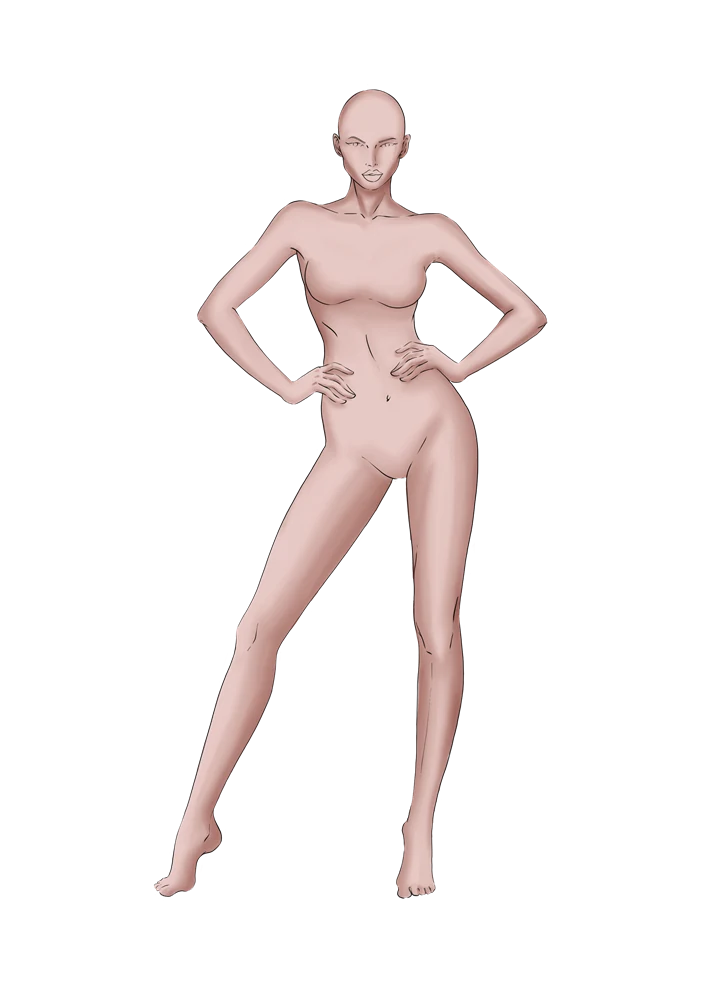
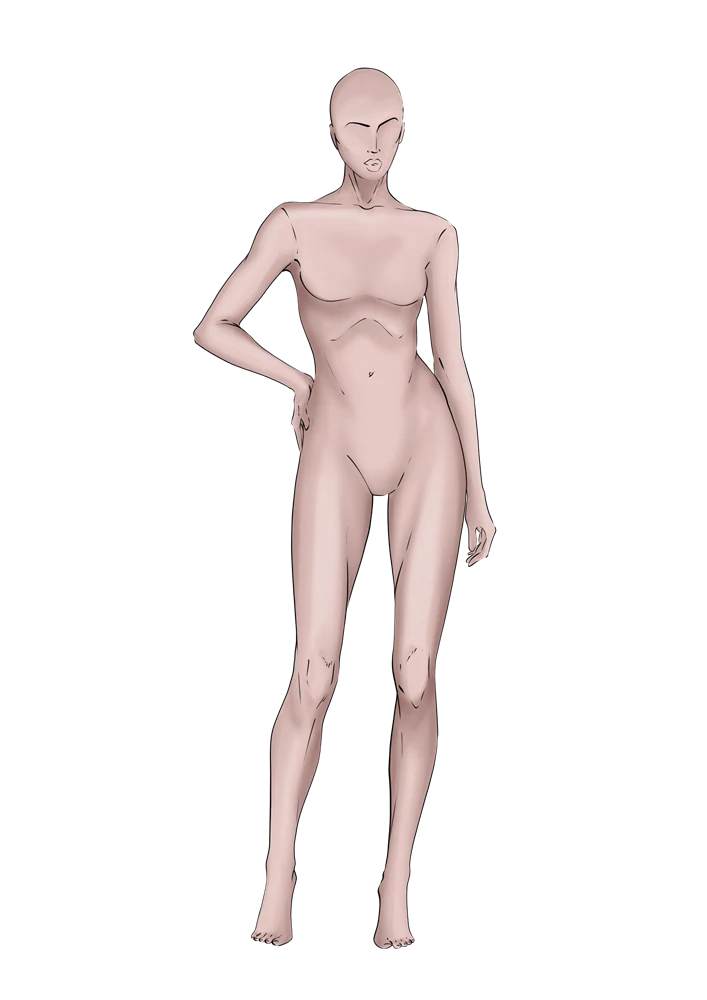
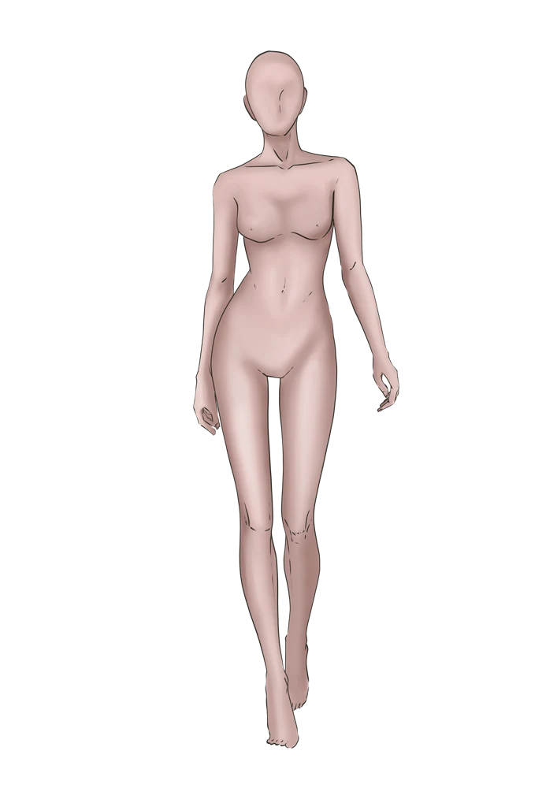
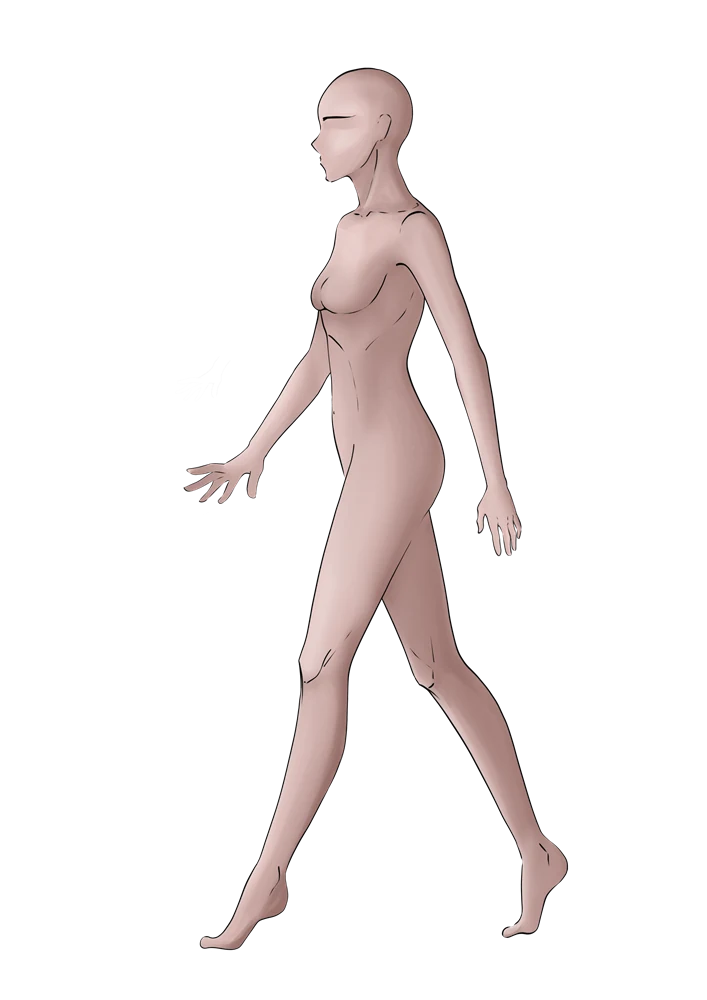
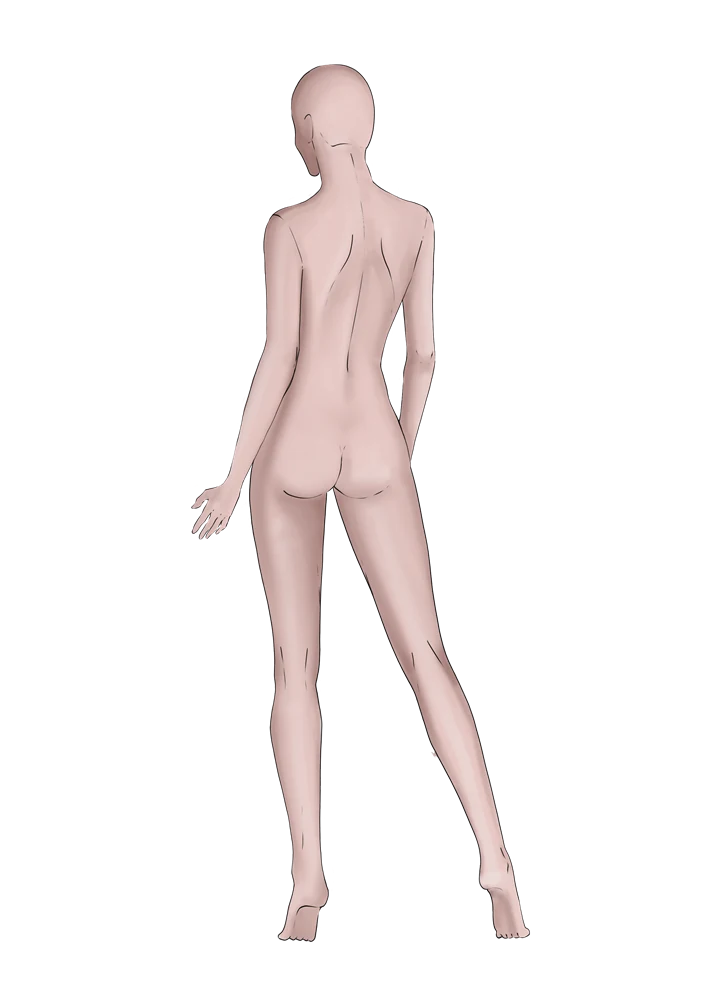
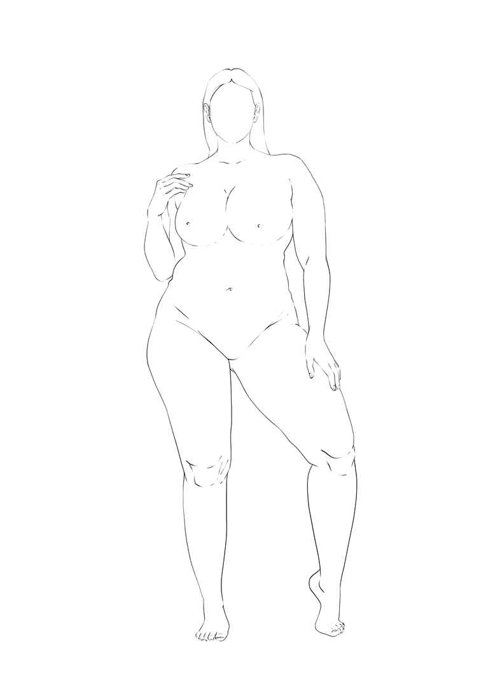
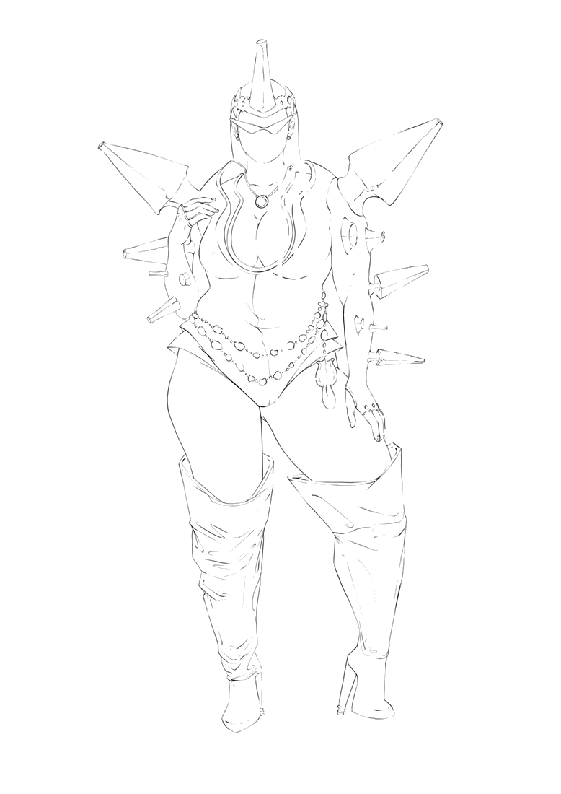
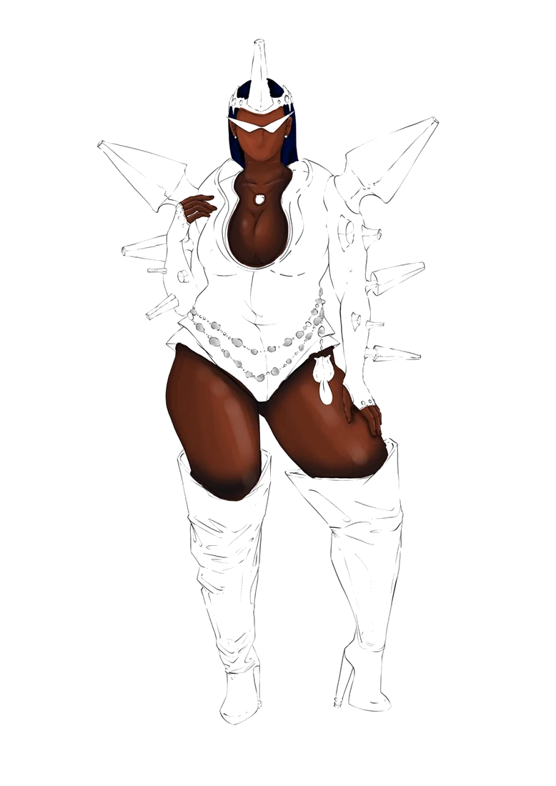
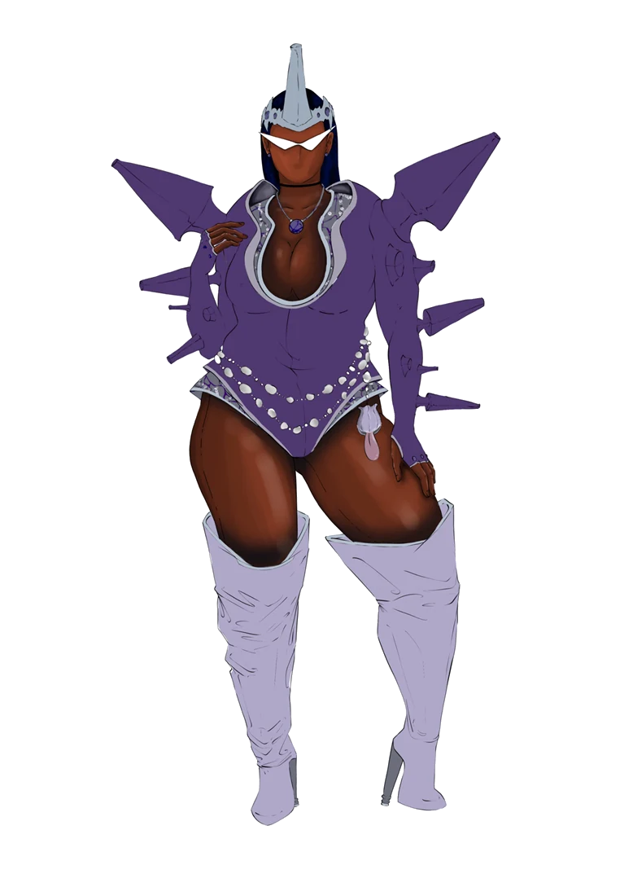
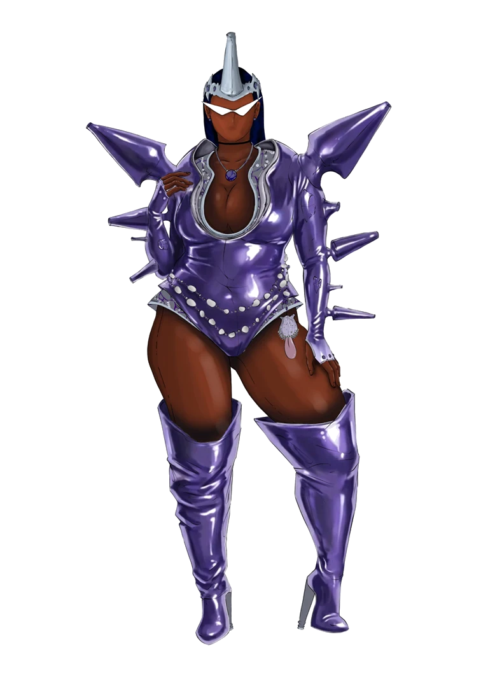

Croqui de moda pronto, sem desenhar do zero.
Para quem estuda moda, monta ateliê ou já cobra pelo croqui. A base pronta, a criação toda sua.
Não precisa ser ilustrador profissional pra usar. O Croqui de Moda PRO traz a base já pronta, com luz, sombra e volume — ideal para TCC, portfólio e para os trabalhos que você vai cobrar. Abra no seu software favorito e comece a ilustrar na hora, ou use a versão lineart para desenhar no papel.
R$ 97,50 à vista · ou até 6x no cartão · dá R$ 3,61 por modelo





O que vem no Croqui de Moda PRO
A maioria dos pacotes entrega só o contorno do croqui. O Croqui de Moda PRO entrega uma base com aparência profissional — é como começar sua ilustração com 50% do trabalho já concluído.
27 modelos, 75+ arquivos
Feminino, masculino, plus size e manequim técnico, em poses de frente, de costas e caminhando. Cada modelo vem em lineart e em base renderizada, com um segundo tom de pele.
Base já renderizada
Luz, sombra e volume prontos — é aqui que o pack se separa dos outros. Em vez de começar de um contorno vazio, você começa a ilustração com metade do trabalho já feito.
Licença de uso comercial
Pode usar os croquis que você criar em portfólio, TCC e trabalho pago, sem pegadinha. Entrega automática por e-mail e suporte direto com o Joel no WhatsApp.
- Estudantes de moda
- Estilistas
- Ilustradores de moda
- Profissionais de ateliê
- Marcas de moda
- Costureiras & freelancers
R$ 97,50 à vista · 27 modelos e 75+ arquivos
Do traço ao croqui pronto
Veja como uma base evolui até virar peça finalizada — 50% desse caminho já sai pronto no pack.





Guia Croqui de 9 cabeças
O método do Joel em 16 páginas, para você construir a figura do zero quando quiser uma pose nova, e transformar o croqui em trabalho pronto para apresentar.
- 01A régua de 9 cabeças, parte por parte, com template para imprimir em escala real
- 02Plus size na mesma régua: o que muda e o que não muda
- 03Do esboço ao acabamento, em 5 etapas
- 04Materiais: renda, brilho, tule, jeans, couro e estampa
- 05A prancha de apresentação, com cartela de cores, materiais e chamadas
Em PDF, junto com o template em PNG para usar no digital.
Trabalhe do seu jeito
Entrega de faculdade, prancha pra cliente ou desenvolvimento de coleção — o pack cabe no seu fluxo, digital ou no papel.
Desenho digital
Importe o croqui renderizado para Procreate, Photoshop, Clip Studio Paint, Illustrator ou o software de sua preferência e comece a ilustrar a peça na hora — sem perder tempo com anatomia ou renderização de pele.
Desenho tradicional
Imprima a versão lineart e desenhe normalmente com lápis, caneta, marcadores ou aquarela no papel.
Joel Pinheiro (@joelcoveero)
Croquis e desenvolvimento de coleções. O traço do Joel já deu forma a conceitos para ícones da cultura pop e marcas de vanguarda — repertório de quem entende o tempo e a exigência do mercado de luxo e do entretenimento. As bases do pack saem desse mesmo traço.

Do papel à passarela
Joel transforma ideias em looks de passarela e atende marcas e estilistas que precisam tirar um figurino do papel com agilidade e qualidade.
Colaborações de elite
Trabalhos que já saíram do papel e foram parar em capa, palco e campanha.
O traço do Joel
Uma amostra do nível de acabamento que você pode esperar — peças e bastidores do portfólio pessoal.
Mesmo traço, agora como base pro seu croqui
Por que não uma IA qualquer ou o Pinterest?
Dá pra tentar. Mas tem três problemas que ninguém conta.
A IA erra a anatomia
Sem uma base sólida, cada tentativa sai diferente — e quase sempre com algo torto. Com a base pronta, o resultado se repete.
Pinterest é imagem dos outros
Você não sabe a resolução real nem quantas pessoas já usaram a mesma. O traço do pack é do Joel, aprovado por marcas e artistas — e licenciado pra você usar.
Nenhum dos dois te dá direito de uso
IA não assina cessão. Pinterest é obra de terceiro. Se o cliente publicar, quem responde é você — aqui a licença comercial vem escrita.
Alta resolução, pronto pra imprimir ou abrir no digital. Traço original, licença por escrito. Sem susto depois.
Uma base com licença comercial, por R$ 3,61 o modelo
Garanta o seu
Lançamento em breve — entre na lista e seja avisado assim que abrir.
preço de lançamento até 30/09 · de R$ 139,00 por
à vista
ou até 6x de R$ 18,29 no cartão
27 modelos e 75+ arquivos — sai a R$ 3,61 por modelo
Um croqui sob encomenda é cobrado a partir de R$ 150. O pack se paga no primeiro croqui ou peça que você vender.
- 27 modelos: feminino, masculino, plus size e manequim técnico
- 75+ arquivos: lineart + base renderizada + segundo tom de pele
- Bônus: guia Croqui de 9 cabeças, com template
- Licença para uso comercial dos seus próprios croquis
- Entrega automática por e-mail
- Suporte via WhatsApp
Dúvidas frequentes
Como recebo o pack depois de comprar?
O arquivo é enviado automaticamente por e-mail assim que o pagamento é aprovado, direto pela plataforma de checkout.
Em quais programas eu uso os croquis?
Em qualquer software que abra imagem, como Procreate, Photoshop, Clip Studio Paint ou Illustrator. A versão lineart também pode ser impressa para desenhar no papel com lápis, caneta ou aquarela.
Qual a diferença entre lineart e base renderizada?
O lineart é só o contorno do croqui, ideal para quem vai imprimir e desenhar à mão. A base renderizada já vem com pele, luz e sombra prontas — você importa no software e foca só em ilustrar a roupa.
Posso usar os croquis em projetos comerciais?
Sim, a licença inclui uso comercial para os seus próprios croquis e coleções.
Quais formas de pagamento são aceitas?
Pix, cartão de crédito e boleto, conforme a plataforma de checkout escolhida.
Por que não gero direto numa IA ou pego uma imagem no Pinterest?
Sem uma base de referência sólida, a IA costuma errar anatomia e proporção, e o resultado varia a cada tentativa. E imagem solta de Pinterest não tem licença de uso comercial nem garantia de resolução. As bases do pack são traço original do Joel, com qualidade testada em produções reais — servem tanto pra desenhar à mão quanto como referência pra IA, com resultado muito mais consistente.
Preciso saber desenhar bem pra usar o pack?
Não. A base já vem pronta e renderizada — você só complementa com a roupa por cima. Funciona até pra quem não é ilustrador, como costureiras e estilistas freelancers que precisam mostrar uma ideia pro cliente com qualidade antes de executar a peça.
Vou usar só uma vez, vale a pena pagar?
Os 27 modelos são seus pra sempre — reutilize em quantos projetos e clientes quiser, sem pagar de novo. Sai muito mais barato do que contratar um ilustrador toda vez que precisar apresentar uma ideia.
Ainda tenho dúvidas, como falo com o Joel?
Chama no WhatsApp ou no Instagram @joelcoveero.